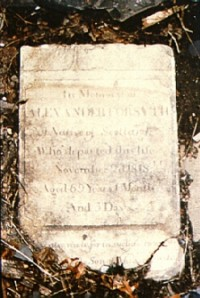

|
by
When Alexander Forsight died in 1818, he was buried in the United Presbyterian Church plot of the Albany municipal cemetery that was located in what is today's Washington Park. After Albany Rural Cemetery opened in 1845, subsequent interments were made in the spacious new graveyard located in the countryside about three miles north of Albany. By the 1860s, the old cemetery in Washington Park had fallen into disrepair and the city fathers took steps to relocate the existing graves to Albany Rural. Tradition holds that the remains were loaded on wagons and carried out Northern Boulevard to their present location in Menands. Although listed in the official report as one of those removed to Menands, Forsyth's stone was not among those that had been set in the old cemetery plot at Albany Rural. Until recently, it seemed to have vanished! Albany has a long and complicated history of caring for its dead. Births were a frequent occurrence in early Albany households. Death was a constant reminder of the frailty of life as almost half of those born to early Albany parents did not live long enough to marry. Infants, children, adults, and the aged were buried in church cemeteries located in various parts of the old city and in family plots located near city homesteads and in the countryside. Garrison soldiers were buried in a plot located north of the fort. The first Dutch Reformed cemetery was located near the southern side of the city stockade - between today's Beaver and Hudson Streets. Previously, notable members were buried beneath the church. The other denominations initially utilized plots located adjacent or nearby the respective churches. By the 1780s, the church cemeteries were full and burial places were no longer appropriate for the heart of a developing urban center. At that time, the Albany common council designated a block of land bounded by today's Eagle, Hawk, Lancaster, and State Streets as the city's municipal cemetery. The city plot was apportioned to the four churches and to leading Albany families. At that time, Afro Albanians were interred in a separate burying grounds located on a ridge above the Foxes Creek ravine. With the rapid growth of Albany's population following the American Revolution, the first city plot soon proved inadequate. By 1801, a new cemetery had been opened on public land near the western edge of the settlement just above newly laid-out Washington Square. A few years later, the Eagle Street block was subdivided into lots for development. Four times as large as its predecessor, the Washington Park Cemetery was bounded by State, Robin, Hudson, and Knox Streets and also was divided into discreet church and family plots. Unlike its predecessor, it included a section for Negroes and another for strangers. Many new graves were created to accommodate the needs of a booming city and to bury those who died during the Cholera Epidemic that swept Albany (as many other populated migration destinations in the United States) in 1832. Fueled by constant immigration, the city of Albany continued to grow and to expand. By 1818, building lots had been laid out facing Washington Square and now surrounded the cemetery on three sides. By the 1840s, houses were built on those lots. Snipe Street also was extended through the heart of the cemetery. However, the Washington Park Cemetery was used until 1868 when the last remains were relocated to Albany Rural Cemetery. A few years later, the one-time city cemetery was transformed into part of Washington Park. In the future, this page will provide more access to information on death and burial in early Albany! Removal of graves: In 1866, the city council published a listing of the graves removed entitled Report of a Special Committee on Burial Grounds. Over the years, we have spent many hours at Albany Rural Cemetery attempting to locate the removed stones. Tradition holds that the relocation of remains took place in 1868. That old publication has been transformed into an online resource. However, it has not been consistently available - except for this more basic format. See also a downloadable pdf document: click. Detail from the De Witt map of 1790 showing the first municipal cemetery and also the "Negro Burying Ground" shown on the far right! Transcriptions of some early Albany death and burial information have begun to appear online. Newspaper obituaries online. ALEXANDER FORSYTH a Native of Scotland Who departed this life November 2, 1818 Aged 69 Years 1 Month And 5 Days _______________ This picture of Alexander Forsyth's gravestone was taken by photographer James Goolsby and brought into our office for identification in 1988. He had encountered the stone in the backyard of a friend's home on the first block of Northern Boulevard a few hundred feet from the Washington Park cemetery. Perhaps it had been vandalized or had fallen off a wagon carrying remains out to Albany Rural cemetery more than a century earlier.
Washington Park cemetery: Detail showing individual church plots from a larger city map made by John Randall and dated 1809. From the collection of the Albany city engineer's office.
Recently encountered interesting and enjoyable site entitled The Church Grounds - Albany Rural Cemetery.
posted 1999; last revised 8/2/16 |